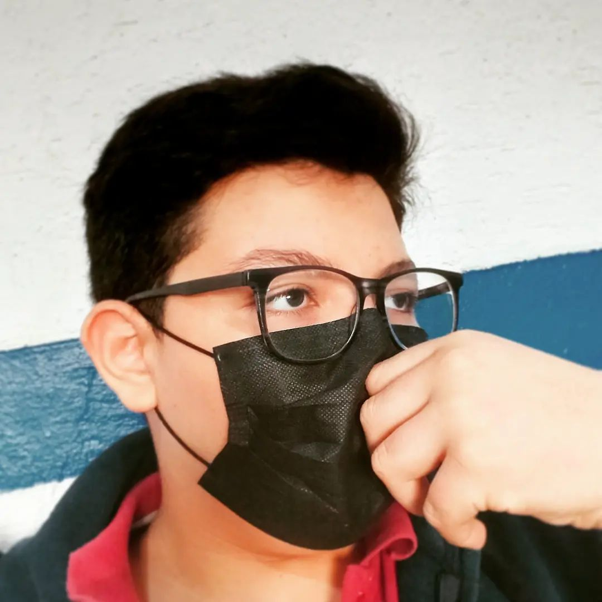

🔸Adrián León Aké🔸
Diseñador Gráfico y Desarrollador Web
¡Bienvenido!
Aquí podrás encontrar una muestra de mis trabajos y habilidades.
Acerca de mí

Soy un apasionado del diseño gráfico y el desarrollo web. Tengo 14 años de edad y resido en Mérida, Yucatán, México. Desde temprana edad, me ha fascinado la tecnología y el mundo de los colores.
Para mí, no hay mejor forma de expresar sentimientos que a través del uso de colores y formas con amor. Disfruto compartiendo mis conocimientos y pasiones en internet, especialmente mediante la creación de páginas web.
Elegí convertirme en desarrollador web porque siento una profunda pasión por la creación de sitios web interactivos y atractivos para los usuarios. Mi objetivo es que todo sea intuitivo, no solo para mí, sino también para los usuarios y todo el equipo de desarrollo involucrado.
En última instancia, mi deseo es expandir mis conocimientos y crecer en la vida a través de mi dedicación al diseño gráfico y al desarrollo web.
Portafolio de Diseño Gráfico

Desde el principio, he dado gran importancia a cada detalle, buscando garantizar la máxima calidad y una experiencia cómoda para el usuario.
Mi enfoque se centra en crear presentaciones visualmente únicas con transiciones y efectos sorprendentes para mantener el interés del espectador.
La calidad de video es una prioridad en mis proyectos, cuidando cada toma sin importar el formato, para lograr una nitidez y claridad impresionantes y proporcionar una experiencia inmersiva.
Mi pasión por la creación audiovisual me impulsa a crecer y superarme en cada proyecto, expresando mi creatividad y dejando una marca en cada pieza finalizada.
Llevo medio año trabajando con After Effects, un programa que me ha cautivado. Con él, puedo crear efectos y pequeñas animaciones, como la de Mario, que fue un proyecto final que me tomó aproximadamente 3 horas. Aunque no estaba completamente pulida debido al tiempo, sé que con práctica, dedicación y tiempo, podré mejorar y realizar trabajos de mayor calidad y presentación.
En mi corto tiempo usando After Effects, me he dado cuenta de su potencial y me resulta una herramienta impresionante para crear animaciones cautivadoras. Estoy emocionado por seguir aprendiendo y perfeccionando mis habilidades en este programa. Cada día es una oportunidad para crecer y alcanzar nuevos niveles de excelencia en mis proyectos.
Mi entusiasmo por el diseño gráfico, desarrollo web y ahora la animación con After Effects me motiva a seguir adelante y enfrentar nuevos desafíos. Con cada paso que doy, me acerco a alcanzar mis metas y aspiraciones en este emocionante mundo creativo.
El futuro se presenta emocionante y lleno de posibilidades. Estoy listo para continuar este viaje y seguir sorprendiéndome con todo lo que puedo lograr con After Effects.

Descripción breve del Proyecto 3.